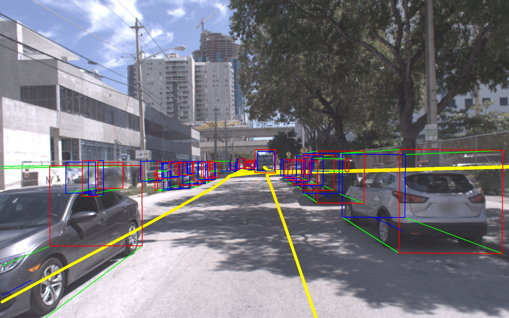
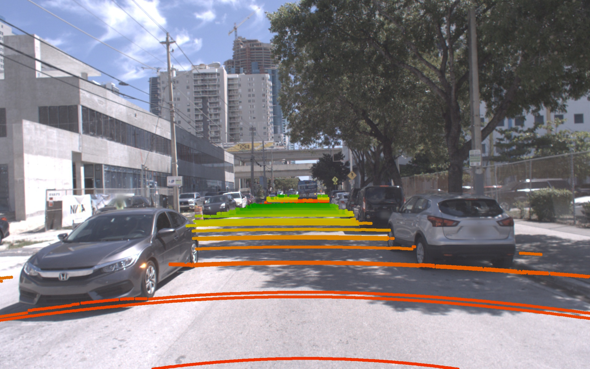

Argoverse API¶
Official GitHub repository for Argoverse dataset
Table of Contents¶
If you have any questions, feel free to open a GitHub issue describing the problem.
Installation¶
Requires Linux/MacOS, git, and Python 3.6+
1) Clone¶
Clone this repo to your local machine using:
git clone git@github.com/argoai/argoverse-api/argodataset.git
2) Download HD map data¶
Download
hd_maps.tar.gzfrom our website and extract into the root directory of the repo. Your directory structure should look something like this:
argodataset
└── argoverse
└── data_loading
└── evaluation
└── map_representation
└── utils
└── visualization
└── map_files
└── license
...
3) Download Argoverse-Tracking and Argoverse-Forecasting¶
We provide both the full dataset and the sample version of the dataset for testing purposes. Head to our website to see the download option.
Argoverse-Tracking provides track annotations and raw data from camera (@30hz) and lidar sensors (@10hz) as well as two stereo cameras (@5hz). We’ve released a total 113 scenes/logs, separated into 65 logs for training, 24 logs for validating, and 24 logs for testing. We’ve separated training data into smaller files to make it easier to download, but you should extract them all into one folder. We also provide sample data (1 log) in
tracking_sample.tar.gz.Argoverse-Forecasting contains 327793 sequences of interesting scenarios. Each sequence follows the trajectory of the main agent for 5 seconds, while keeping track of all other actors (e.g car, pedestrian). We’ve separated them into 79392 test sequences, 40128 validation sequences, and 208273 training sequences. We also provide sample data (5 sequences) in
forecasting_sample.tar.gz.
Note that you need to download HD map data (and extract them into project root folder) for the API to function properly. You can selectively download either Argoverse-Tracking or Argoverse-Forecasting or both, depending on what type of data you need. The data can be extracted to any location in your local machine.
4) Install argoverse module¶
argoversecan be installed as a python package usingpip install -e /path_to_root_directory_of_the_repo/
if you recieve any error about
No matching distribution found for pyntcloud, upgrade your pip usingpip install --upgrade pipor pip install with--process-dependency-links
Make sure that you can import argoverse in python, and you are good to go!
Usage¶
The Argoverse API provides useful functionality to interact with 3 main components of our dataset: HD Map, Argoverse Tracking Dataset and Argoverse Forecasting Dataset.
from argoverse.map_representation.map_api import ArgoverseMap
from argoverse.data_loading.argoverse_tracking_loader import ArgoverseTrackingLoader
from argoverse.data_loading.argoverse_forecasting_loader import ArgoverseForecastingLoader
avm = ArgoverseMap()
argoverse_tracker_loader = ArgoverseTrackingLoader('argoverse-tracking/') #simply change to your local path of the data
argoverse_forecasting_loader = ArgoverseForecastingLoader('argoverse-forecasting/') #simply change to your local path of the data
See our demo tutorials below.
Demo¶
To make it easier to use our API, we provide demo tutorials in the form of Jupyter Notebooks.
To run, you’ll need to first install Jupyter Notebook pip install jupyter. Then navigate to the repo directory and open a server with jupyter notebook. When you run the command, it will open your browser automatically. If you lose the page, you can click on the link in your terminal to re-open the Jupyter notebook.
Once it’s running, just navigate to the demo_usage folder and open any tutorial! Note that to use the tracking and forecasting tutorials, you’ll need to download the tracking and forecasting sample data from our website and extract the folders into the root of the repo.
Argoverse Map Tutorial¶

Argoverse-Forecasting Tutorial¶

Rendering birds-eye-view¶
Run the following script to render cuboids from a birds-eye-view on the map.
$ python visualize_30hz_benchmark_data_on_map.py --dataset_dir <path/to/logs> --log_id <id of the specific log> --experiment_prefix <prefix of the output directory>
For example, the path to the logs might be argoverse-tracking/train4 and the log id might be 2bc6a872-9979-3493-82eb-fb55407473c9. This script will write to <experiment prefix>_per_log_viz/<log id> in the current working directory with images that look like the following: 
It will also generate a video visualization at <experiment prefix>_per_log_viz/<log id>_lidar_roi_nonground.mp4
Rendering cuboids on images¶
Run the following script to render cuboids on images.
$ python cuboids_to_bboxes.py --dataset-dir <path/to/logs> --log-ids <id of specific log> --experiment-prefix <prefix for output directory>
This script can process multiple logs if desired. They can be passed as a comma separated list to --log-ids. Images will be written to <experiment prefix>_<log id> in the working directory that look like the following: 
It will also generate video visualizations for each camera in <experiment prefix>_amodal_labels/
Rendering ground lidar points on images¶
Run the following script to render lidar points corresponding to the ground surface onto images.
$ python visualize_ground_lidar_points.py --dataset-dir <path/to/logs> --log-ids <comma separated list of logs> --experiment-prefix <prefix for output directory>
This will produce images and videos will be in the directory <experiment prefix>_ground_viz/<log id>. Here is an example image: 
Stereo correspondence¶
For all log segments, accurate calibration between liDAR and cameras enables sensor fusion approaches, but the calibration may not register the stereo images into perfect epipolar correspondence.
Contributing¶
Contributions are always welcome! Please be aware of our contribution guidelines for this project.
Disclaimer¶
Argoverse APIs are created by John Lambert, Patsorn Sangkloy, Ming-Fang Chang, and Jagjeet Singh to support “Chang, M.F. et al. (2019) Argoverse: 3D Tracking and Forecasting with Rich Maps, paper presented at The IEEE Conference on Computer Vision and Pattern Recognition (CVPR) (pp. 8748-8757). Long Beach, CA: Computer Vision Foundation.” THIS SOFTWARE CODE IS INTENDED FOR RESEARCH PURPOSES ONLY AND IS NOT DESIGNATED FOR USE IN TRANSPORTATION OR FOR ANY OTHER DANGEROUS APPLICATION IN WHICH THE FAILURE OF SOFTWARE COULD CREATE A SITUATION WHERE PERSONAL INJURY OR DEATH MAY OCCUR.